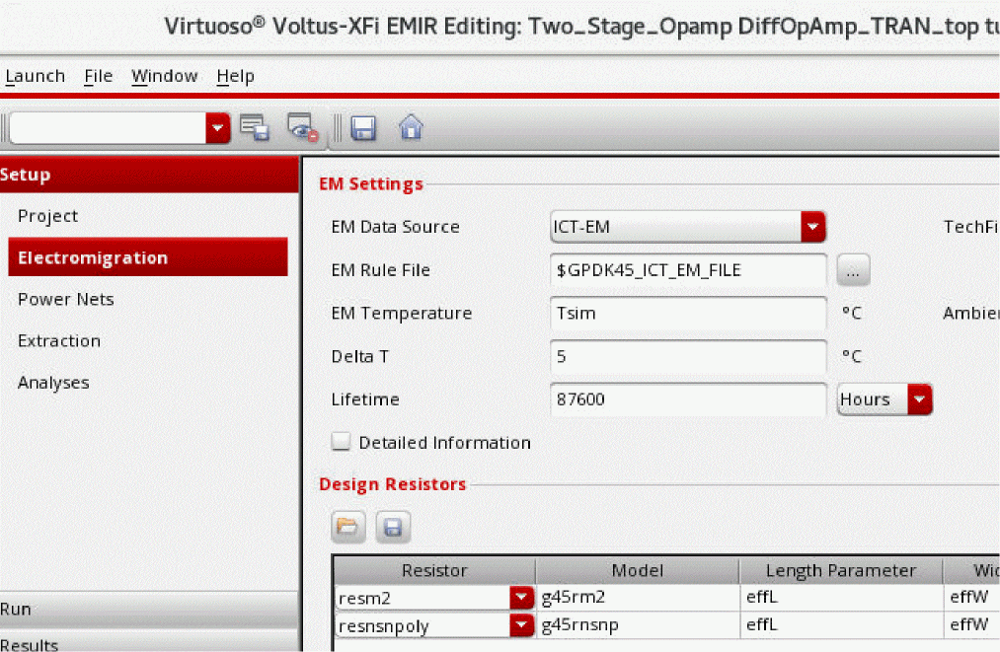

Specifying EM Rule Settings
To specify the EM rule settings, do the following:
-
Choose Setup – Electromigration from the task pane.

- From the EM Data Source drop-down list, select the source type for electromigration rules.
- In the TechFile field, specify the location of the Quantus technology file.
- In the EM Rule File field, specify the location of electromigration rules file.
- In the EM Temperature and Ambient Temperature fields, specify the temperature (in degree Celsius) at which the EM analysis and thermal analysis will be run, respectively. The default EM Temperature and Ambient Temperature is set to Tsim (simulation temperature).
- (Optional) In Delta T, specify a value for the rise in temperature based on Joule Heating.
- (Optional) In Lifetime, specify the length of time for which you want to run the EM analysis.
-
(Optional) Select the Detailed Information check box to analyze electromigration issues in detail.
-
(Optional) In the Design Resistors section, specify the design resistors you would like to include in electromigration analysis. You can either load a list of design resistors from an existing design resistor setup or add them interactively in the table.You can save the design resistor setup in a file, and then use theTo add specific design resistors for which EM-IR analysis is be performed:
designResistorFile.cdsenv variable to load this setup automatically for a process node.-
Select a design resistor cell name from the Resistor drop-down list.
The resistor model name will be displayed in the Model field. - Specify length and width values of the selected resistor in the Length Parameter and Width Parameter fields.
- Specify the layer name for the EM rule in the Layer field.
- You can select Click to add in the Design Resistors table to add more resistors.
- Click Save.
-
Select a design resistor cell name from the Resistor drop-down list.
Related Topics
Return to top